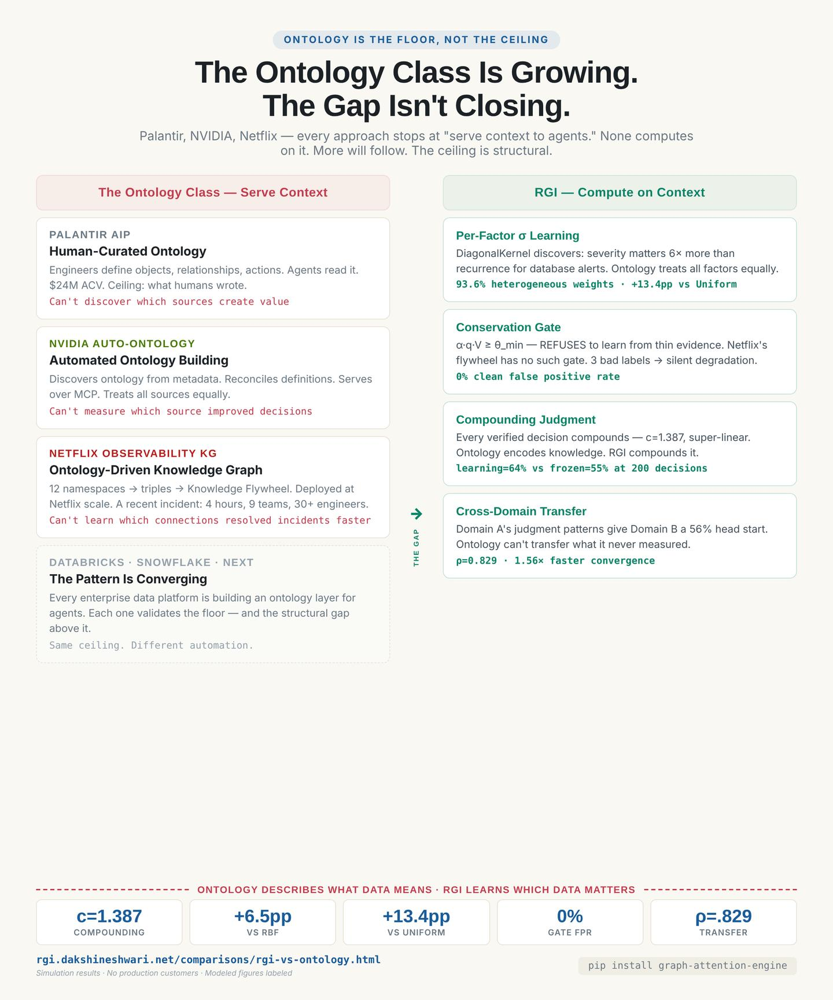
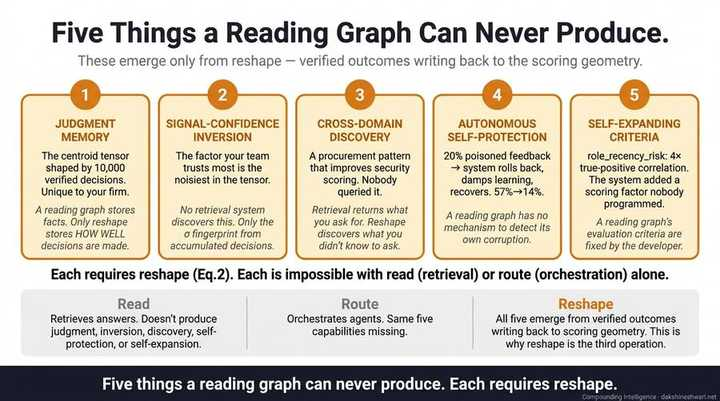
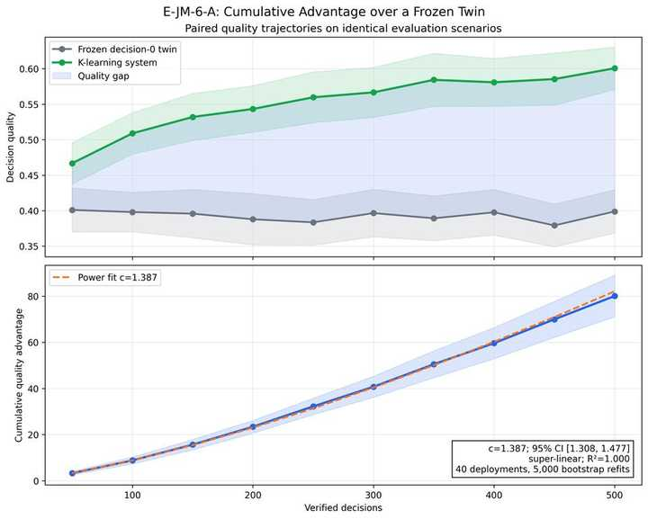
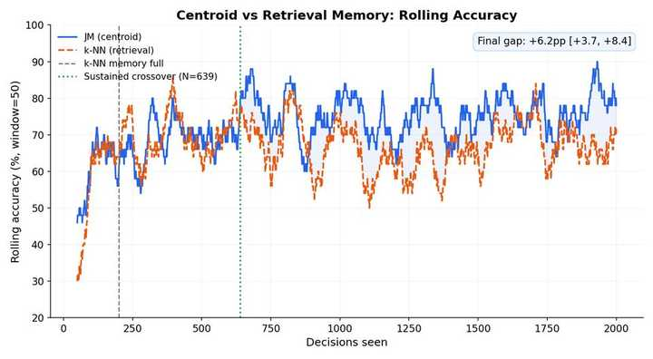
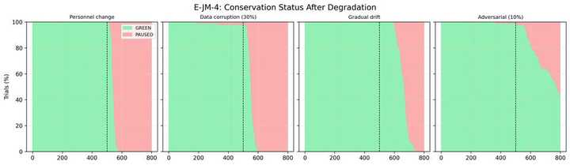
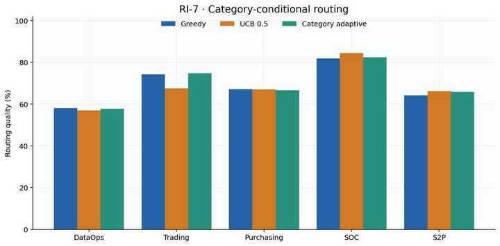
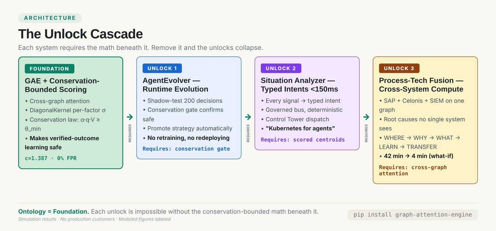
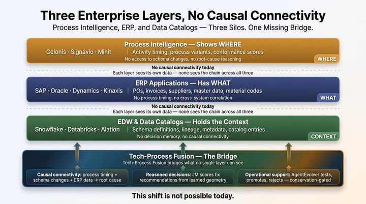
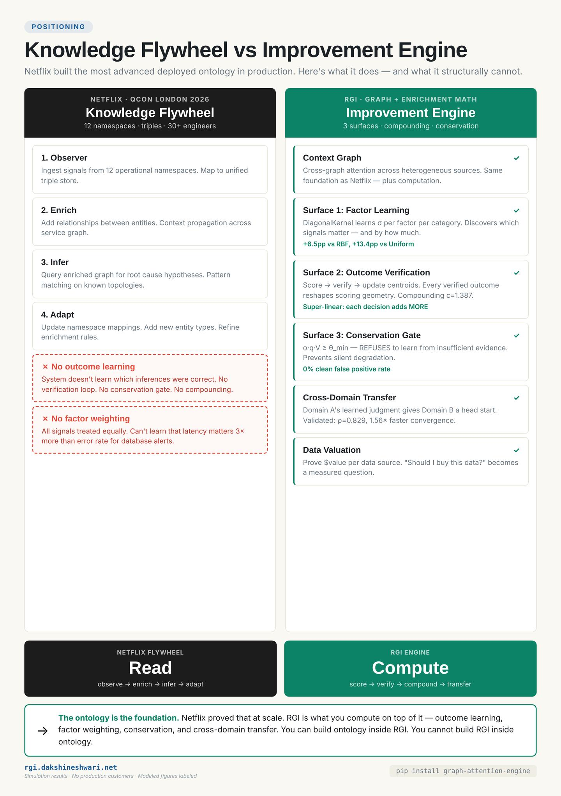

RGI: Why Ontology Alone Is Not Enough for Agentic AI
• Enterprise AI converging on ontology — Palantir curates, NVIDIA automates, Netflix deploys at scale
• More will follow
• Ontology describes what data means — doesn't learn which data matters, which combinations create value, or whether the last decision was right
• RGI (Recursive Graph Improvement) = the computational layer — graph + enrichment math → static context → compounding judgment
WHAT IS RGI
RGI: Every Decision Makes the Next One Sharper
RGI (Recursive Graph Improvement) — compound AI layer above the foundation model:
• Decision surface — scoring + conservation + judgment memory
• System surface — AgentEvolver runtime evolution
• Target surface — process-tech fusion across SAP, Celonis, SIEM, data pipelines
• ~194 controlled experiments · 167 published charts · 5 copilots · ~10,000 tests
ENGINE METRICS
c=1.387
compounding exponent
+13.4pp
vs Uniform (ontology default)
0%
clean FPR
ρ=0.829
cross-domain transfer
COPILOT RESULTS (MODELED)
+15pp
S2P touchless AP
−50%
SOC MTTR
12×
root cause speed
THE ONTOLOGY CLASS — CONVERGENCE + GAP

Palantir curates, NVIDIA automates, Netflix deploys at scale. All converge on ontology. None computes on it.
The Ontology-as-Product Class
• Ontology describes what data means
• RGI computes which data creates value — proves it with measured improvement
• Not a layer on top of ontology — structurally more powerful substrate
• You can build ontology inside RGI. You cannot build RGI inside ontology.
PALANTIR AIP
Human-Curated Ontology
• Engineers manually define objects, relationships, actions • Agents read it • Can't discover what isn't authored
Ceiling: what humans wrote New data source: weeks of curation Can't: discover which sources create value
NVIDIA AUTO-ONTOLOGY
Automated Ontology Building
• Discovers ontology from metadata • Reconciles definitions, serves over MCP • Treats all sources equally
Ceiling: what metadata reveals New data source: ingest + discover Can't: measure which source improved decisions
NETFLIX OBSERVABILITY ONTOLOGY
Deployed Operational Ontology
• 12 operational namespaces → triples → Knowledge Flywheel • Observer → Enrich → Infer → Adapt • Integration: ~4 hours for a new system (fast) • But: a recent incident still took 4 hours to resolve, 9 teams, 30+ engineers
Ceiling: what the flywheel observes New data source: ~4 hours (namespace mapping) Can't: learn from outcomes or bound degradation
THE PATTERN: INDUSTRY CONVERGENCE
Everyone Builds the Graph
• Every major platform converging on ontology/graph for agentic AI • The pattern is clear • The question: what do you compute on top of it?
Palantir: curate → read NVIDIA: discover → read Netflix: observe → enrich → read More will follow.
RGI GRAPH + ENRICHMENT MATH
Computational Decision Graph
• Cross-graph attention + DiagonalKernel + enrichment controller • Discovers, measures, and values data sources automatically • Every platform above builds the graph — RGI computes on it • Proves every computation with measured improvement
Ceiling: no ceiling — compounding (c=1.387) New data source: plug in → measure → value
Can: prove $value per data combination Can: learn from outcomes, bound degradation, transfer across domains
Two Stacks, One Gap
THE ONTOLOGY CLASSPalantir · NVIDIA · Netflix
The Read Layer
RGIApache 2.0 · ~194 experiments
The Learn Layer
PURPOSE
Build semantic context so agents query data correctly
PURPOSE
Compound decision intelligence — every outcome makes the next decision sharper
Certified corrections folded back (manual, human-in-the-loop)
LEARNING
Automatic — every verified outcome updates centroids (c=1.387 super-linear)
SAFETY GATE
Query validation against certified definitions
SAFETY GATE
Conservation law: α·q·V ≥ θ_min(0% clean FPR)
CROSS-SYSTEM
Reconcile conflicting definitions across data sources
CROSS-SYSTEM
Process-tech fusion: SAP + Celonis + SIEM on shared decision graph
Where Each Sits — and What Each Unlocks
Five Things a Reading Graph Can Never Produce
FROM THE RGI RESEARCH PROGRAM — Five Things a Reading Graph Can Never Produce

Ontology is a reading graph. All five capabilities require reshape — verified outcomes writing back to scoring geometry. Read and route alone cannot produce any of them.
1Compound judgment over decisions
• Ontology class: same context whether 1 decision or 10,000 • RGI: centroids shift with every verified outcome • Decision 10,000 draws on geometry of all prior decisions
# +21.96pp over static baseline
# Compounding exponent c=1.387
# Super-linear — each decision adds MORE
2Prevent silent degradation
• Ontology class: validates queries against static definitions • Definitions don't catch silent degradation as data shifts • Conservation law gates every centroid update
• Ontology class: treats all sources equally • RGI DiagonalKernel: per-factor weights • SAP GR data matters 3.1× more than Celonis timing for three-way-match
• Ontology class: serves context over MCP • RGI Situation Analyzer: every signal → typed intent on governed bus • <150ms trigger-to-dispatch · deterministic · auditable
# ACCP: Situation-Analyzer + typed-intent bus
# + Control-Tower router
# Deterministic routing, not LLM inference
# 7-year audit trail
5Process-tech fusion: computation across enterprise systems
• Ontology class: connects to Databricks, Snowflake, Postgres • RGI: SAP + Celonis + SIEM + data pipelines on shared decision graph — computes across them • 5-act storyboard: WHERE (bottleneck) → WHY (schema change root cause) → WHAT (recommendation + what-if) → LEARN (conservation-bounded) → TRANSFER (promoted to other systems)
# SAP schema change → join fanout 9× → pipeline bottleneck → supplier exception
# Connected through shared graph nodes. Cross-system computation.
# "Match Invoice to GR": 42 min → 4 min (what-if)
# Pattern promoted to billing_api — auto-resolved next occurrence
The Math That Makes the Difference
• Ontology reconciles definitions → correct numbers. Necessary
• Correct numbers don't compound into better decisions
• The math below turns data context into decision intelligence
CONSERVATION LAW
• Centroids update only when evidence is sufficient • No other agent framework has this guarantee against silent degradation
α·q·V ≥ θ_min
where:
α = category coverage ratio
q = verification quality
V = verified decision volume
θ_min = 23.53 / (α × V)
# 0% clean false positive rate
# 100% poison detection across all regimes
# Gate prevents bad updates from thin data
COMPOUNDING EXPONENT
• Super-linear — each decision contributes more than the last • Measured across ~194 experiments · bootstrap confidence intervals
c = 1.387 [1.308, 1.477]
accuracy(t) ~ t^c where c > 1
→ super-linear improvement
Discovery surface: n^2.150, γ=2.622
→ recovery after disruption faster
than initial learning
ENRICHMENT CONTROLLER
• Reads fewer context sources while improving accuracy • Ontology class: queries all sources uniformly • No learning about which sources matter for which decisions
Adaptive vs uniform enrichment:
+6.5–6.8pp accuracy improvement
fewer context reads required
# The system learns WHICH data sources
# matter for WHICH decision categories
# Ontology class treats all sources equally
CROSS-DOMAIN TRANSFER
• Procurement scoring pattern improved security-alert scoring • No manual intervention — cross-graph attention on shared decision graph
Transfer correlation: ρ = 0.829
Convergence speedup: 1.56–1.78×
Negative transfer: 25% → 0%
Cross-entity accuracy: +4.67pp
CI: [+3.90, +5.44]
# Domain A learns → Domain B improves
# Ontology class: no cross-domain learning
CUMULATIVE ADVANTAGE

Super-linear compounding: c=1.387 [1.308, 1.477]. Each decision contributes more than the last.
HEAD-TO-HEAD vs kNN

Crossover at N=639. Final gap: +6.2pp [+3.7, +8.4]. RGI outperforms nearest-neighbor baseline.
CONSERVATION GATE

0% clean false positive rate. 100% poison detection. The gate that prevents silent degradation.
ADAPTIVE vs UNIFORM ENRICHMENT

Adaptive enrichment: +6.5–6.8pp accuracy with fewer context reads. Learns which sources matter.
Charts from ~194 controlled experiments · Full registry: 167 published charts · Simulation results · No production customers
~194 Experiments, 167 Charts
• Every claim backed by numbered experiments + bootstrap confidence intervals
• Ontology class: no published experiment program
• RGI: ~194 controlled experiments · 167 published charts
96.7%
Personnel Change Detection
+10.59pp. Judgment memory survives team changes — new analyst inherits all prior learning.
93.6%
σ-Diagnostic
Heterogeneous per-factor weights in 93.6% of categories. Uniform weighting is wrong almost every time.
ρ=0.829
Cross-Domain Transfer
1.56–1.78× convergence speedup. Procurement pattern improved security-alert scoring with zero manual intervention.
0% FPR
Conservation Gate
0% clean false positive rate. 100% poison detection across all regimes. The math that prevents silent degradation.
86.8%
Recovery After Poisoning
System self-heals after adversarial injection. Conservation gate catches, learning recovers.
63.4%
Cross-Graph Discovery
Spearman 0.440. Finds patterns across graph domains that humans miss.
★c=1.387
Cumulative Advantage
CI [1.308, 1.477]. Super-linear compounding — each decision contributes more than the last. The headline result.
★γ=2.622
Discovery Surface
n^2.150 scaling. Recovery after disruption faster than initial learning. The system gets better at recovering.
+4.67pp
Cross-Entity Accuracy
CI [+3.90, +5.44]. Transfer works across entity types, not just domains.
+6.2pp
Head-to-Head vs kNN
CI [+3.7, +8.4]. Crossover at N=639. Outperforms nearest-neighbor baseline at scale.
+9.2pp
Ablation Stability
CI [+7.2, +11.3]. Excludes zero from N=500. Robust under component removal — no single piece is carrying the result.
~66 foundational experiments13 numbered E-JM experiments167 published chartsAll with bootstrap CIsSimulation results · No production customers
Capability Scorecard
• Green background = capability present
• Shared capabilities = semantic layer
• RGI-only capabilities (bottom 8 rows) = learning layer the math unlocks
Capability
Ontology Class
RGI
Build ontology from metadata
✓
✓ UCL graph
NL-to-SQL query
✓
—
Query validation + provenance
✓
audit ledger
MCP connector for agents
✓
✓ API + routers
Reconcile conflicting definitions
✓
✓ graph
THE LEARNING LAYER (RGI only)
Score decisions with domain factors
✗
✓ 5–7 factors
Learn from verified outcomes
✗
✓ c=1.387
Conservation law (prevent degradation)
✗
✓ α·q·V ≥ θ_min
Cross-domain transfer
✗
✓ ρ=0.829
Runtime strategy evolution
✗
✓ AgentEvolver
Adaptive enrichment
✗
✓ +6.5–6.8pp
Situation analysis (typed intents)
✗
✓ ACCP <150ms
Process-tech fusion
✗
✓ 5-act TPF
5 shared capabilities (the semantic layer) · 8 RGI-only capabilities (the learning layer) · Ontology class: 5 of 13 · RGI: 11 of 13
The Unlock Cascade

• Ontology class's value = its ontology. Full stop
• RGI's value = what the math unlocks — three systems impossible without conservation-bounded centroid geometry
• Each unlocks capabilities the previous one couldn't reach
FOUNDATION
GAE + Conservation-Bounded Centroid Scoring
• Cross-graph attention (pip install graph-attention-engine) • DiagonalKernel per-factor σ learning • Conservation law (α·q·V ≥ θ_min) • Without this → everything below is either unsafe or stateless
↓
UNLOCK 1
AgentEvolver — Runtime Strategy Evolution
Requires: conservation gate to know when a shadow strategy is safe to promote
Unlocks: • Agents improve own routing rules, prompt modules, context composition • No retraining, no redeploying, no human approval • Shadow-test 200 decisions → conservation gate confirms → auto-promote • Agent infrastructure evolves at runtime
Requires: centroid geometry to score intents, conservation gate to enforce routing safety
Unlocks: • Every signal (KPI breach, alert, user ask) → typed intent on governed bus • Deterministic · auditable · <150ms • Control Tower dispatches the right copilot — ACCP pattern ("Kubernetes for agents") • Without scored centroids → routing on string matching or LLM inference
↓
UNLOCK 3
Process-Tech Fusion — Computation Across Enterprise Systems
Requires: cross-graph attention on learned profiles, conservation-bounded enrichment to know which sources matter
Unlocks: • SAP schema change → join fanout → pipeline bottleneck → supplier exception • Connected through shared graph nodes • Root causes no single system can see — spans Celonis + SAP + SIEM + operational data • 5-act storyboard: WHERE → WHY → WHAT → LEARN → TRANSFER
UNLOCK 3 IN PRACTICE — Three Enterprise Layers, No Causal Connectivity

Celonis shows WHERE. SAP has WHAT. Snowflake holds CONTEXT. No causal connectivity between them — until Tech-Process Fusion bridges all three on one decision graph.
The point:
• Ontology builds one layer
• RGI's math unlocks three systems on top — each impossible without conservation-bounded centroid geometry
• Remove the math → AgentEvolver has no safety gate, Situation Analyzer has no scored intents, Process-Tech Fusion has no cross-graph computation
• The math isn't decoration. It's structural.
In Code
ONTOLOGY CLASS — QUERY WITH CONTEXT
# Connect data sources
POST /api/datasources
{"type": "snowflake",
"connection_string": "snowflake://..."}
POST /api/datasources
{"type": "databricks",
"connection_string": "databricks://..."}
# Ingest metadata → build ontology
POST /api/datasources/{id}/ingest
# → discovers tables, columns, relationships
# → generates ontology nodes, reconciles
# conflicting definitions across sources
# Ask a question → NL-to-SQL
POST /api/chat
{"message": "What was Q3 revenue by region?"}
# Pipeline:
# 1. Rewrite follow-up as standalone
# 2. Ontology grounds "revenue" → certified def
# 3. SQL generated against grounded schema
# 4. Query validated against certified lineage
# 5. Result: $12.3M (EMEA $4.1M, APAC $3.8M...)
# 6. Provenance: table, column, lineage attached
# ✓ Correct answer with provenance
# ✗ No scoring of the decision that used it
# ✗ No conservation gate on data quality
# ✗ No learning which sources matter more
# ✗ Next query treats all sources equally
# ✗ Decision 1,000 = Decision 1
RGI — SCORE, LEARN, COMPOUND (PUBLIC SDK)
from gae import build_profile_scorer, conservation_status
import numpy as np
# Initialize with domain config
categories = ["exact_match", "partial", "exception"]
actions = ["approve", "review", "reject"]
scorer = build_profile_scorer(
categories, actions, centroids, n_factors=7
)
# Score with 7 domain factors
vector = np.array([0.03, 0.92, 0.87, 0.95, 0.78, 0.64, 0.91])
result = scorer.score(vector, category_index=0)
# → ScoringResult(action_name='approve', confidence=0.847)
# Verify the outcome
scorer.update(vector, 0, result.action_index,
correct=True, confidence=result.confidence)
# Centroids shift. DiagonalKernel σ updated.
# Conservation gate
status = conservation_status(
verified_count=412, correct_count=340,
total_decisions=500, penalty_ratio=5.0,
categories_with_data=3, total_categories=3)
# → GREEN, passed=True, headroom=210.8
# After 1000 decisions: compounding c=1.387
# SAP GR data (σ=0.12) matters 3.1× more than
# Celonis timing (σ=0.37)
# Pattern transferred to SOC scoring (ρ=0.829)
Ontologies and Semantic Graphs Are Mathematically Equivalent
• The claim that a semantic graph "is not an ontology" is formally incorrect
• Bidirectional equivalence proven in linear time (Lembo et al., 2022)
• W3C defines a standard lossless OWL 2 → RDF graph encoding (2012)
The Formal Relationship
Gruber (1993) defines an ontology as O = (Σ, Ax) — a signature Σ = (C, R, I) of classes, roles, and individuals, plus axioms Ax constraining their relationships.
Lembo et al. (2022) prove that the graphical language Graphol — whose constructs map to labeled graph elements — is equivalent to OWL 2 / SROIQ(D):
Theorem 1 (Graph → OWL 2):
∀ graph ontology G satisfying the structural proviso,
Ψ(G) produces an OWL 2 TBox. Linear time.
Theorem 2 (OWL 2 → Graph):
∀ OWL 2 TBox T,
Λ⁻¹(T) produces a graph ontology. Linear time.
Ψ and Λ⁻¹ are mutual inverses.
The representations are formally interchangeable.
The W3C OWL 2 Mapping to RDF Graphs (2012) independently defines a standard, lossless encoding of any OWL 2 ontology as a graph — the same equivalence, codified as a web standard.
Classical ontologies are static and expert-authored. RGI adds a learned quantitative layer on the ontological schema:
CENTROIDS μ
Statistical prototypes compiled from verified outcomes — closer to probabilistic DLs (Lukasiewicz & Straccia, 2008) than classical OWL
KERNEL WEIGHTS W
W = diag(1/σ²) — per-deployment precision encoding which ontological dimensions carry signal vs noise
WRITE-BACK
[:TRIGGERED_EVOLUTION] edges update centroids from verified decisions — the ontology schema is stable; the quantitative layer evolves
Ontology-grounded learning graph. Not "data context."
Gruber 1993 · Lembo et al. 2022, Future Internet 14(3):78 · W3C OWL 2 Mapping to RDF 2012 · Lukasiewicz & Straccia 2008, J. Web Semantics 6(4)
Why Grounded Context Isn't Enough
• Ontology excels at grounding: validated definitions, reconciled schemas, certified provenance
• But grounded context doesn't learn which sources matter for which decisions
• RGI adaptive enrichment: learns which context matters for which decision category
DiagonalKernel: Per-Factor Weight Learning
# Each copilot has a tensor of decision cells
# SOC: (6,4,6) = 144 cells Trading: (5,3,6) = 90 cells
# S2P: (5,5,7) = 175 cells DataOps: (6,5,6) = 180 cells
# DiagonalKernel learns σ_i per factor dimension
# High σ → factor matters less (wide kernel, smooth)
# Low σ → factor matters more (narrow kernel, sharp)
# σ-diagnostic: 93.6% prevalence of heterogeneous σ
# → uniform weighting is wrong 93.6% of the time
# → grounded context alone misses this
# Adaptive enrichment result:
# +6.5–6.8pp accuracy with FEWER context reads
# The system learns to ignore irrelevant sources
Enrichment Strategy Comparison
NETFLIX KNOWLEDGE FLYWHEEL vs RGI IMPROVEMENT ENGINE

Netflix built the most advanced deployed ontology. Here's what it does — and what it structurally cannot. Read vs Compute.
RGI Can Also Do What Ontology Does
• Ontology's core job (grounded context + NL questions + provenance) → subset of RGI UCL
• UCL graph holds the same metadata, definitions, relationships
• Difference: RGI's context is learned, not just discovered
RGI — ANSWERING A DATA QUESTION (ontology's job, plus learning)
CI Platform API — internal, not public SDK. Public SDK covers scoring + conservation + judgment via gae.
# The UCL graph already has source metadata
sources = store.query("""
MATCH (s:DataSource)-[:HAS_COLUMN]->(c:Column)
WHERE c.name = 'revenue'
RETURN s.name, c.certified_definition, c.lineage
""")
# → [("snowflake_finance", "Net revenue after returns", "ERP.GL → ETL → finance.revenue")]
# CI Platform API: source trust profile
profile = scorer.source_profile("snowflake_finance")
# → SourceProfile(dk_trust=0.89, verified_decisions=3400, iks=72)
# CI Platform API: per-factor importance for this decision category
sigma = scorer.get_sigma("revenue_forecast", "snowflake_finance")
# → 0.12 (tight kernel = high importance)
# vs Celonis timing source: σ=0.37 (wide = low importance)
# When the agent asks "What was Q3 revenue by region?"
# RGI answers with:
# 1. The number ($12.3M) — same as ontology
# 2. Source trust (IKS 72, GREEN, 3400 verified)
# 3. Which sources were weighted how (σ per source)
# 4. Confidence from scored centroids (0.89)
# 5. Conservation status of the answer (gate met)
• Ontology: validates against certified definitions (what a human wrote)
• RGI: validates against verified outcomes (what actually happened)
• RGI does both — and learns from the gap between them
The Real Question
Ontology answers: "What was Q3 revenue?" RGI answers: "Should we approve this invoice — and was the last approval right?" RGI also answers: "What was Q3 revenue?" — with trust scores, source weights, and conservation status.
• One gives agents correct data
• The other gives agents compounding judgment — and can also give them correct data
• Ontology layer = necessary infrastructure (like a database schema)
• No one ships a database schema as a product — the product is what you compute on top of it
RGI computes on top of it:
• Conservation-bounded scoring · cross-graph attention · adaptive enrichment
• Situation analysis · process-tech fusion
• Three unlocked systems on the context graph that ontology helps build
• Ontology = the foundation. RGI = the building — includes the foundation.